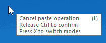
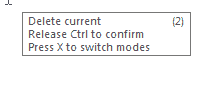
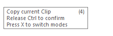
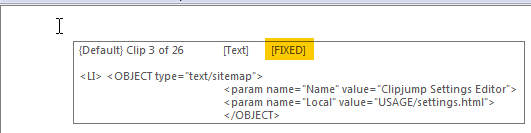

Clipjump Help
- After Downloading Clipjump, unzip it and run Clipjump.exe .
It's a portable application so no installation is needed.
- When you run the exe, Clipjump's icon will be seen in SystemTray.

- Try copying either by Ctrl+C or by Right Click -> Copy or Shift+PrintScreen
- You will notice a Tip, [Transferred to Clipjump] when you copy something.This will mean that the copy has been succeeded.

- Now, press Ctrl+V(paste action), you will see a tip containing the file or text to be copied.[This is Paste Mode].
If an Image has been copied, a Window showing your image will pop-up.
You will have to release Ctrl to perform actions. (You will know later)
Here, Release Ctrl to paste.

- To move through Multiple Clipboards, press V again while holding Ctrl. [while in Paste Mode]
Release Ctrl to Paste.Tap C while holding Ctrl to move backwards.
- To Cancel paste operation, press X while in Paste mode [Ctrl Pressed].
The tip should change to a Cancel Message. This is [Cancel Mode]
Release Ctrl to confirm.

- To Delete Current Clipboard, press X twice in Paste Mode or once in Cancel Mode.
The tip should now change to a Delete Message. This is [Delete Mode]
Release Ctrl to confirm.

- While holding Press X now to go to the Move mode(3) and Copy mode(4).
Release Ctrl here to copy and move clips to a different channel.Detailed info about these features can be found
here.

- To Delete all Clips, press X 5 times in Paste Mode OR 4 times in Cancel Mode OR thrice in Delete Mode.
The tip should change to a Delete All message.This is [Delete All Mode]
Release Ctrl and then confirm the confirmation tip with Y to proceed.
Use F when holding Ctrl in Paste mode to find a clip. When you press F, a box appears where you can type some text (after releasing Ctrl) to
find clips containing that text. Use Up and Down keys to jump through the results, Enter to paste and Esc/Home to cancel. More in-depth info of
this feature can be found later.
Notes
- As you can see, Releasing Ctrl is the basis of performing actions in Clipjump.
- Also, note that Cancel Mode,Delete Mode, Move Mode, Copy Mode and Delete All Mode are inter-related.
The program cycles through these modes when you press X while holding Ctrl.
So, pressing X while holding Ctrl in Delete All Mode will switch back to Cancel Mode.
- TIP - Use A in Paste Mode to directly jump to the first clip.
Clipjump Action Mode (or simply Action Mode) provides a clean user-friendly interface to execute almost all the other components of Clipjump.
Activated with the default configurable shortcut Ctrl+Shift+A , it provides easy keys to run components of Clipjump.
Action Mode easy keys can be totally configured through ClipjumpCustom.ini
[v9.9.1]- Clipjump Action Mode is the default shortcut to execute any functionality in Clipjump. If you want to create System-Level shortcuts for these functions,
you should use the Settings Editor OR ClipjumpCustom.ini.
[v10.6+] Press F to activate the Search feature in Paste mode. A box should come above the tip.
From here, you can search for specific text among all the clips in all the channels. Here are the key points-
- When Search box is active, leave Ctrl and type your query . Don't worry, paste will not be invoked.
- As you type, you will see the tip jump to the first matched point. First it searches the currently active channel and then goes in ascending order to the next channels. Use Up and down to move Up and down the results
- Use Enter to paste if your result is in the underlying tip.
- Use Home/Esc to cancel paste operation.
- To later hide the box, hold Ctrl again and press F. Keep holding Ctrl now, you are in Paste mode.
The search follows the partial search methodology as seen in the History Tool.
Important INFO
When using Search-Paste mode, the clip pointer will not be affected provided you end the activity with Search Paste Mode. That is you use
either Enter to paste or Home/Esc to cancel.
Example - The active clip will stay as it is (eg > Clip 4 of channel 0 ) even if you search something and that is in 5th clip of {6} channel. Use Enter to
paste it and you will find that the active clip in paste mode is still clip 4 of channel {0} if you reopen it with Ctrl+v.
Clip pointer is not kept (updated) if you press Ctrl+F in Search-paste mode to close the search window.
All other Paste mode shortcuts, Ctrl+E for export, Ctrl+Space for fixate are still valid in Search paste mode.
While searching if you arrive at a tip you want to paste with a custom paste formatting, you can use Ctrl+Z and then Enter instead of Ctrl+F to close search window, then
Ctrl+Z to a paste format and then release of Ctrl.
The former method here will keep the clip pointer preserved as it ends with an action of the Search Paste Mode.
Tip - You can change shortcuts in Search paste mode through ClipjumpCustom.ini.
Tip - Search for [IMAGE] to find images.
Multipaste in SearchPaste Mode
You can use Ctrl+Enter when search is active in paste mode to paste without closing the paste and search mode. Unlike Paste Mode,
here after first paste with Ctrl+Enter, the release Ctrl action will not change to cancel. So you don't need to hold Ctrl as you always do when search mode is
active.
Paste Formats
previously denoted by NO-Formatting Mode
[v10.7.3+] (Custom) Paste formats are possible as a plugin feature in Clipjump. With these, you can paste any clip as UPPERCASE, SentenceCase... or even trim off
formatting from copied HTML.
To choose a format to paste with, you will have to activate it in the Paste mode. As like many features, it is also available with a
special key.
In PASTE MODE, use the "Z" key as a cycler for the various formats available.
When you reach to the format of your choice, release Ctrl to paste.
The clip will be pasted in the selected format.
Press Ctrl+v (activate Paste Mode) again. You will see that your selected format is still active. Use "Z" to change it.

How it works?
All paste formats are powered by their respective plugins. Clipjump loads all the available paste formats from the plugin folder, creates a list and accesses them when
user demands pasting/previewing from a plugin. You can too create your own paste format provided you know
AutoHotkey, the simplest programming language.
Note that that Paste formats don't permanently change the clips. They are copied into memory and the 'memory-copy'
is what is changed at the time of action.
TIP - To make a paste-format as default for Clipjump , see the option Default Paste Format in the Settings editor.
See Also - Default Paste Formats distributed with Clipjump
The Fixate option is meant to hold a current Clipboard at a fixed position while
positions of all other Clipboards change.
Thus, if a Clipboard is fixed at [Clip 1], it
will stay there at Clip 1 even after numerous Copies and Cuts.
This can be useful if you want a Clipboard entry to be easily accessible every time you
go in Paste Mode using Ctrl+V.
Please note that Clipjump remembers last pasted clip's position. So, if you have just pasted [Clip 5], Clipjump will
start from [Clip 5] the next time you press Ctrl and then V [Paste Mode].
Use the A key in Paste Mode to go back to the first clip and thus change the clip pointer permanently.
Using Fixate
Pressing SPACE while in [Paste Mode] toggles the Fixed status of a Clip.
If you reach the clip of your choice and want to fix it, press SPACE and you
will notice a "[FIXED]" written after (Clip x of y).
This means the Clip is Fixed there. As said above , pressing SPACE again
on the fixed clip will remove the FIX from it and the "[FIXED]" from the tip will disappear.

Note that the DeleteAll option will delete FIXED Clips too.
[v10.6+] Press H in Paste mode to start editing a clip.
The Paste mode will end and your default_editor or default_image_editor will open the clip.
The default_editor and default_image_editor can be configured from the System section of settings.ini.
Once the editor comes up, change the clip according to needs, save the changes and then exit the editor.
Clipjump will respond to the exit and update the clip. Alternatively press Esc anytime to exit.
Editing works for all types of clips but for text clips all formatting will be lost when they are updated.
[v10.7.3] You can also use Enter in Paste mode (while holding Ctrl) to do multi-paste. In this mode, you will be able to paste without closing the Paste Mode.
To do multi-pasting, tap Enter in Paste Mode. Once the first entry with Ctrl+Enter is pasted, releasing Ctrl will
change action from 'pasting' to 'cancelling'. This change will be valid only in that session and once you have cancelled everything will be back to normal i.e.
release to paste and Ctrl+x and then release to cancel.
The same feature is also available when search mode is active.
- Activating the Action Mode and then C will copy path(s) of selected files in all file managers including Windows Explorer.

- Using Action Mode and then X will copy path of current opened folder in all file managers including Windows Explorer. You can also create an independent shortcut
for this function in the Settings Editor.
- Activating the Action Mode and then F will copy selected file's content to Clipjump.
- This function works with all file managers including Windows Explorer.
- This module will also work on Image files and exported Clipboard files (.cj).
Export and share Clipboards
Clipjump supports exporting clipboards as files which can be stored as a record OR send to a friend.
The feature is accessible by tapping E in [PASTE MODE] and by the shortcut Ctrl+E in the Clipjump History Tool.
The Clip or Clipboard when exported will be saved in "My Documents" with a name export[x].cj where x is a variable.
The .cj file extension when used with Copy File Data directs Clipjump to load the file contents into itself.
Copying and Moving Clip
[v10+] Clips can be copied and moved from one channel to another from the Paste Mode.
To do so, press X when in Paste Mode to change to Cancel Mode. While still holding Ctrl, press X again and again till you reach to Move Clip and Copy Clip mode.
Release Ctrl to confirm.
You will see a list of channels to copy/cut clip to. Select a channel and click OK.
Selective Windows Clipboard
Many a times there are situations where you are not allowed to paste using the old shortcut Ctrl+V (like in Command Prompt).
There the Selective Windows Clipboard Option comes handy.
Using
Cycle through the clipboards by Ctrl+V or C .When you reach the clip of your choice,
press S while holding Ctrl.
You will see a Confirmation (System Clipboard has Clip x) in form of tip.
That's it.
Now, the Right-Click > Paste Or any other option to Paste other than the old Ctrl + V
will paste the Clip you had choose like it is currently stored in System Clipboard.
[v10.9+] Hold Clip feature allows you to copy clipboard to a buffer location from where you can either paste the data or copy it to the currently active channel.
No shortcut for holdclip is assigned by default but the option has been provided in the Settings Editor. Once you have created a shortcut for holdclip, use it copy
the selected text/file/folder/anything to the buffer.
Tip - Want HoldClip feature to cut rather than copy data to buffer. Try this Customization --
[cut_to_buffer]
bind = Ctrl + Win + X
STORE.holdClip_send = ^{vk58}
; virtual key 58 is X , so ^x = Ctrl+X
run = holdclip
Sound when copied
[v9.8.1+] Clipjump can be configured to make system beep when some data is copied to it. The setting can be found in the Settings editor as "Beep when copied.
To change the frequency of the beep played, navigate to the Advanced section of settings.ini and change the value of beepFrequency to your liking.
To force Clipjump Paste Mode to be activated by some other key other than Ctrl+V, you can use the Settings editor of Clipjump.
Simply open the editor and look for the Paste Mode(Ctrl +..) value in the Shortcuts group. Change the default V in the box to some other key to make the Clipjump Paste Mode to be activated by the Ctrl combination of that key. Make the value blank to disable Clipjump Paste Mode.
Disable Clipjump
[v9.7+] You can disable Clipjump ( i.e. Clipboard Monitoring and Paste Mode ) from the Tray Menu as well as Action Mode. In Action Mode, this option is available
with the easy key D.
To have more control over Clipjump, see Clipjump Controller .
Ignore(d) Windows Manager
Clipjump can be temporarily automatically suspended when a certain window is active with this feature. The feature requires the active window's class which can
be very easily managed with the Ignore(d) Windows Manager located in the Tray Menu>Tools or in the Action Mode with easy key L.
Use the Add Class button in the manager to start a tooltip application that shows the class of the active window. To make a window active, simply make it foreground
by left-clicking on it.
Use Delete Class button to delete a value.
Note that you will have to restart Clipjump once you have made changes to the Settings.ini for them to take effect.
[v9.5+] To reset Clipjump to its default settings and remove all the data created by Clipjump on your computer , use this option . The option can be found in
the About window for Clipjump. The data that will be removed includes history items, paste mode clips, extracted icons and the settings file.
Many a times you have applications that use Clipboard's common transfer to extract data from various locations.
These apps can be a headache when used with as consistent a tool as Clipjump.
The One Time Stop feature just solves this problem. Available with O key in Action Mode,
you can call it once to make Clipjump automatically ignore the next data and linked content that is transferred to System Clipboard and so Clipjump.
In this period, what really happens is that the Clipjump Clipboard Monitoring is
deactivated.
NOTE - When Clipboard Monitoring is disabled (as in One Time Stop) , Clipjump's tray icon will become dark.
WARNING - One Time Stop is deactivated when Paste Mode is accessed in the one time stop activated period.
Paste Mode (Ctrl Held)
See ClipjumpCustom.ini example to change these keys
V - Activate PASTE-MODE and move forward through Multiple Clipboards (from 1 to 2 , 2 to 3)
C - Move backwards through Multiple Clipboards (from 3 to 2 , 2 to 1)
S - Add current Clip to Windows Clipboard
X - Toggle between Cancel, Delete, Copy, Move and Delete All MODE
E - Export current clip
A - Jump to first clip
F - Activate Search
H - Edit Clip
Z - Toggle pasting formats
Enter - Start Multiple Pasting Session
Space - Fix/un-fix a clipboard at its position
Up - Change channel to 1 up (+1)
Down - Change channel to 1 down (-1)
Search in Paste Mode(Ctrl released)
Enter - Paste
Home/Esc - Cancel
Up - Move one clip up (+1)
Down -Move one clip down (-1)
General (System Wide)
Ctrl+Shift+A - Action Mode
Win+C - Open Clipjump Clipboard History Tool
Translate
{kind=link}
{kind=link}